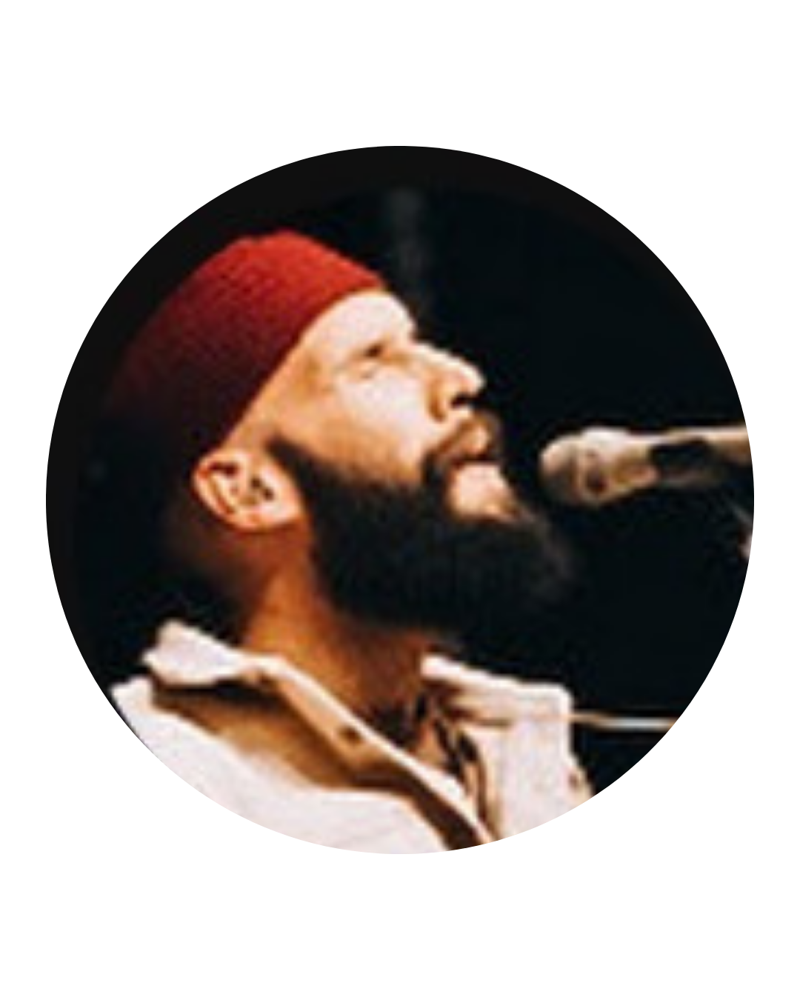
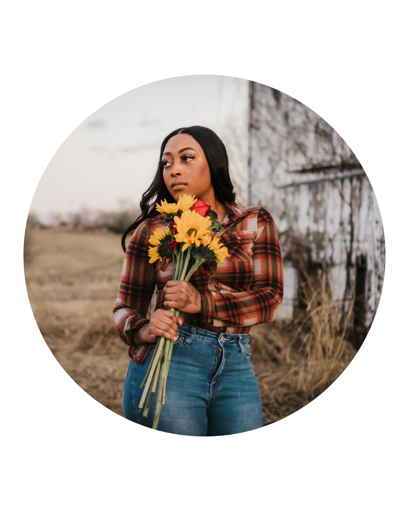

É Ele (Ao Vivo) • DROPS

Comentários

HOJE ESTOU TÃO FELIZ PORQUE A PESSOA QUE ESTÁ LENDO ESSE COMENTÁRIO VAI VIVER TEMPO DE RENOVO BÊNÇÃOS MILAGRES E DUPLA HONRA NA SUA VIDA. AMÉM?! 🙏🏻 🔑🔥🙌🏻🙏🏻💕
Eu acredito que se João Batista fosse cantar uma música, seria essa! Eu imagino Jesus chegando, e João Batista cantando: É ELE, É POR ELE QUE ESTOU GASTANDO A MINHA VIDA ❤️🔥
Dedico esta canção àqueles que anonimamente estão perdendo suas vidas por amor a Deus. Desconhecidos no mundo e conhecidos no Céu! ❤
55.630.037 visualizações — Estreou em 1 de ago. de 2024
Clique em "Ver mais" para expandir o texto completo.
@dropsINAoficial
É Ele
▸ Assista nossa playlist DROPS: https://onilnk.com/r/DropsINA_EMANUEL
▸ Inscreva-se no canal: https://onilnk.com/r/Drops
▸ Letra - É Ele
Compositor: Paulo Vicente
ESTOU PREPARANDO UM CAMINHO
ENDIREITANDO AS VEREDAS
CADA VEZ MAIS DIMINUINDO
PORQUE IMPORTA QUE ELE CRESÇA
NELE O MEU PRAZER ESTÁ
EU NÃO SOU DIGNO DE DESATAR
AS SUAS SANDÁLIAS
NELE A MINHA VIDA ESTÁ
E EU CAMINHO COM A CERTEZA
DE QUE ELE VIRÁ
É ELE, POR ELE QUE EU ESTOU GASTANDO A MINHA VIDA
PERDENDO TUDO POR AMOR E COM ALEGRIA
DONO DOS MEUS DIAS
ELE VIRÁ, SOBERANO EM PODER
ELE VIRÁ, E O GOVERNO ESTÁ NELE
VEJAM, ELE TRAZ CONSIGO A SUA RECOMPENSA
▸ Ouça também outras músicas do DROPS:
Canção de Simeão: https://onilnk.com/r/DropsINA_CancaoD...
Santo: https://onilnk.com/r/DropsINA_Santo
Fome e Sede: https://onilnk.com/r/DropsINA_FomeeSede
Mostra- me Tua Face: https://onilnk.com/r/DropsINA_MostraM...
Estás Aqui: https://onilnk.com/r/DropsINA_EstasAqui
Há um lugar: https://onilnk.com/r/DropsINA_HaUmLug...
Quem é Aquele: https://onilnk.com/r/DropsINA_QuemeAq...
Em Uma Só Voz: https://onilnk.com/r/DropsINA_EmUmaSoVoz
Tu Que És o Primeiro + O Teu Amor Está Ganhando Forma: https://onilnk.com/r/DropsINA_TuQueEs...
A Paz É Uma Promessa: https://onilnk.com/r/DropsINA_APazeUm...
Venha ao Altar: https://onilnk.com/r/DropsINA_VenhaAo...
Só Tu Tens: https://onilnk.com/r/DropsINA_SoTuTens
▸ A banda DROPS faz parte da INA Londrina, cujos pastores seniores são os Prs. Davi e Monica de Sousa.
A banda surgiu em julho de 2016, quando, em uma das noites de adoração que aconteciam com frequência no ministério de adolescentes, uma canção foi registrada e postada no Youtube.
A palavra inglesa “DROPS”, significa “pequenas gotas", e para nós representa "vislumbres” da glória de Deus, que podemos experimentar quando O adoramos.
Paulo e Rebeca Vicente são os pastores do ministério de música da INA Londrina e responsáveis pelo DROPS, que além de servir à igreja local, também têm ministrado em todo o Brasil, compartilhando o que temos experimentado de maneira tão significativa.
▸ Veja outros singles do DROPS:
Aqui Como no Céu, Acende o Fogo, Maravilhosa Graça, O Teu Amor Está Ganhando Forma, Canção de Simeão, A Paz é Uma Promessa, e muito mais.
▸ Ficha Técnica:
Vozes: Paulo Vicente, Ana Ruth, Rebeca Vicente e Tiago Alexandre
Violão: Paulo Vicente
Baixo: Matheus Araújo
Guitarras: Matheus Santos e Leonardo Silveira
Teclado: Tiago Alexandre
Bateria: Thiago Ferreira
Captação: Leonardo Silveira
Produção musical: Tiago Alexandre
Mixagem e masterização de áudio: Tiago Alexandre
Direção de Fotografia: Igor Oda
Operadores de Câmera: Renan Abreu, Samuel Fernandes, Leonardo Leme, Davis Willian, Pedro Farina, Álvaro Rockenbach, Mateus Matos, Jeferson Pereira
Edição e Color Grading: Igor Oda
▸ Redes Sociais DROPS:
Email: dropsadls@gmail.com
Instagram: /drops.ina
Canal INA: /inabrasil
Instagram Pr. Davi: /prdavi
Instagram Pra. Monica: /pramonicasousa
Instagram Paulo: /opaulovicente
Instagram Pr. Pedro Elias: /pedroe.sousa
Instagram Rebeca: /arebecavicente
Fan Page: fb.com/inadrops
Site: geracao.tv/adls
Site INA Londrina: inabrasil.org
#Drops #ÉEle #SomQueAlimenta
© 2024 Onimusic